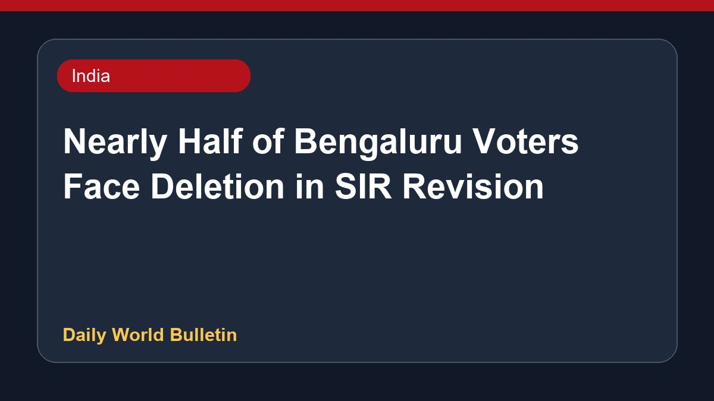

Nearly Half of Bengaluru Voters Face Deletion in SIR Revision

Reports indicate that nearly half of Bengaluru's 1.03 crore voters may be removed from the draft electoral roll following a Special Intensive Revision. Approximately twenty percent of electors are expected to be dropped from the draft list, with over thirty-four lakh individuals slated to receive notices. Voters can now verify online whether their names have been flagged under the ASDDO category during this revision process across Karnataka.
Original source: India News Sources
Nearly Half Of Bengaluru's Voters Face Deletion From Voter Rolls In SIR - NDTV ↗
Nearly Half Of Bengaluru's Voters Face Deletion From Voter Rolls In SIR - NDTV ↗
Related News
 India
IndiaIAF officer arrested for leaking defence secrets to Pak handler
 India
IndiaDMK and allies boycott Tamil Nadu MPs' meet on delimitation called by CM Vijay
 India
IndiaPM Modi expresses disappointment over low number of female IIT Delhi medal winners
 India
India